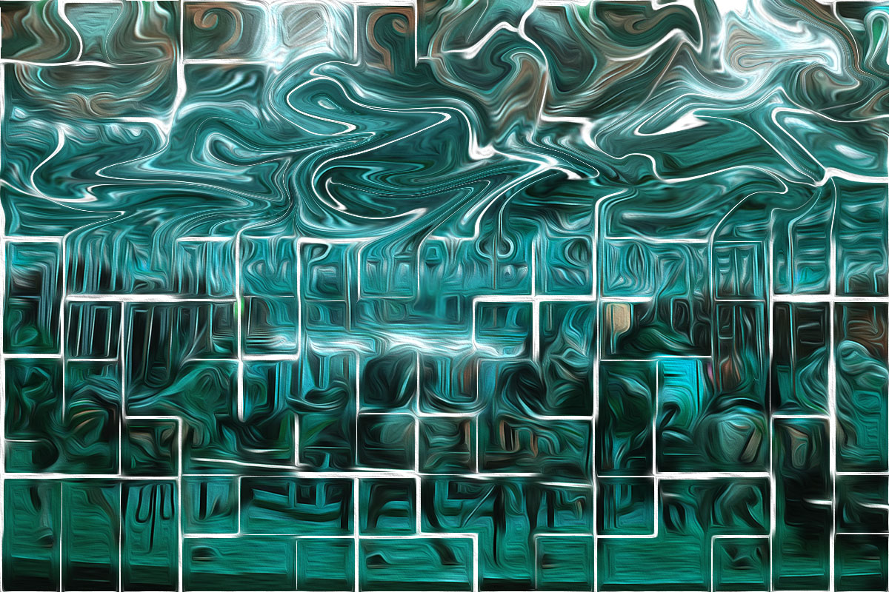
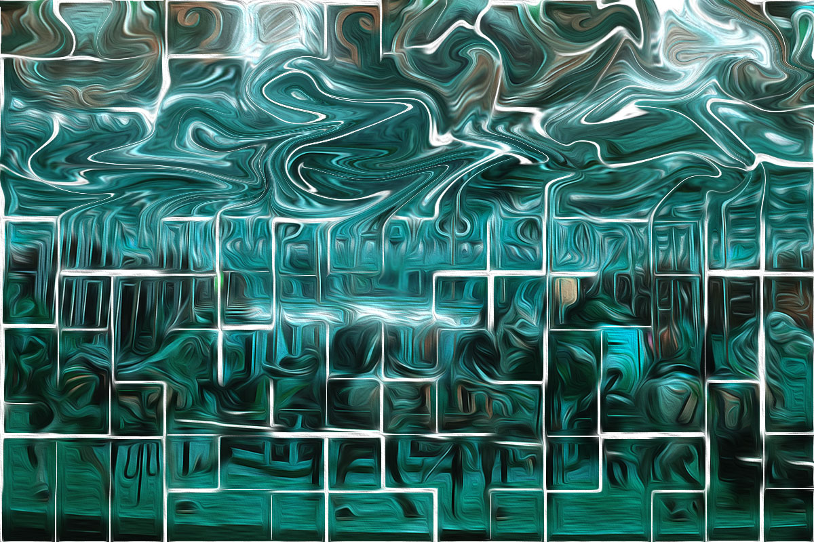

These two photos are part of my Photo Editing assignments using Photoshop. The one one the left is the original one I took of the carousel at Dumbo in Brooklyn. It is a nice warm color of gold. The photo on the right is after being edited. I changed the tone of the color to a cold light blue. I also played around with the filter and the effect of oil painting and result in this photo.
The photo on the left is a photo of a huge dictionary I found in the New School library. The one on the right is designed with the logo of "Journalism + Design". I dimmed the background a little bit so that the contrast between the background and the logo will be more apparent.
To visit my main homepage to learn about me, please visit this link